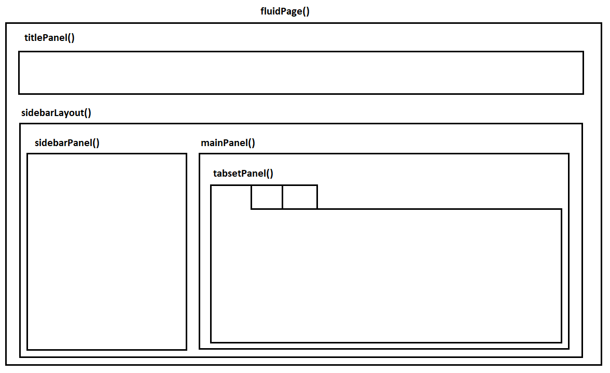

Building Dashboards with R Shiny
FIRSA Webinar
Vilnius University
2026-05-12
Dashboards and Research
Research projects often produce outputs that are difficult to communicate through a paper or even a presentation.
With dashboards, users can filter data, inspect indicators, compare cases, and see how results change without touching the underlying code.
For research communication, the goal is to make part of the evidence easier to inspect, reuse, and discuss.
What is R Shiny?
A
Shinyapp is a web app connected to a computer running an R session.The front facing elements are in the User Interface (UI) and the back code is in the Server.
Users can manipulate the UI, which updates the code in the server and gets reflected back to the UI.
R Shiny Workflow
User changes input
↓
Shiny stores value in input$...
↓
Server runs the relevant render...() code
↓
UI updates the matching output
Setting up an Shiny app template
Shiny basic functions
Shiny creates interactive apps for users using R code. The server that hosts it must have R installed (in this case your laptop) to run.
The User Interface UI
The fluidPage() command creates HTML code which is used to construct the web page. It contains the elements we want as inputs (from users) and outputs (from the server).
The Server Function
The server function contains the R code that reacts to user inputs, creates outputs such as plots or tables, and sends those results back to the user interface.
Inputs (UI)
Input functions inside the fluidPage() command collect information from the users that is then used to run the script in the server. This can be done in several ways:
Outputs (UI)
Output functions inside the fluidPage() display the different types of objects we create for our web app. This is what the user will observe. For example:
- Plots
- Text
- Tables (etc…)
Render Functions (Server)
render() functions create outputs from R scripts and transforms them to HTML code which can be displayed in our web page. These commands go in the server.
Input and Output Vocabulary
| Purpose | UI function | What it does | Server pair |
|---|---|---|---|
| Dropdown selection | selectInput() |
Lets the user choose one or more options from a list | input$... |
| Slider | sliderInput() |
Lets the user choose a value or range by dragging | input$... |
| Checkbox | checkboxInput() |
Lets the user turn an option on or off | input$... |
| Numeric entry | numericInput() |
Lets the user type a number | input$... |
| Text entry | textInput() |
Lets the user type text | input$... |
| Date selection | dateInput() / dateRangeInput() |
Lets the user choose a date or period | input$... |
| Plot display | plotOutput() |
Shows a plot created in the server | renderPlot() |
| Text display | textOutput() |
Shows short text | renderText() |
| Printed text | verbatimTextOutput() |
Shows printed or preformatted text | renderPrint() |
| Table display | tableOutput() |
Shows a basic table | renderTable() |
| Interactive table | DTOutput() |
Shows a searchable interactive table | renderDT() |
| HTML content | htmlOutput() |
Shows HTML generated in the server | renderUI() / renderText() |
Panel Layouts (UI)

Panel Layouts (UI)

App folders and file organization
A small
Shinyapp can live in a single file calledapp.R.Research dashboards often need separate data files, helper scripts, images, logos, CSS, or downloadable outputs.
For larger apps, it is also possible to split the interface and server logic into separate files called
ui.Randserver.R.
my_app/
├── ui.R
├── server.R
├── data/
│ └── penguins.csv
├── R/
│ └── helpers.R
├── figures/
│ └── histogram.png
│ └── scatterplot.png
├── www/
│ ├── styles.css
│ └── icon.png
└── outputs/
└── filtered_data.csv# File Name: app.R
# Simple Palmer Penguins Shiny App
# Set Up ----------------------------------------------------------------------
# Install packages if needed:
# install.packages(c("shiny", "palmerpenguins", "dplyr", "ggplot2"))
library(shiny)
library(palmerpenguins)
library(dplyr)
library(ggplot2)
# Data ------------------------------------------------------------------------
penguins <- palmerpenguins::penguins %>%
mutate(
species = as.factor(species),
island = as.factor(island)
)
# User interface --------------------------------------------------------------
ui <- fluidPage(
titlePanel("Palmer Penguins Shiny Demo"),
sidebarLayout(
sidebarPanel(
selectInput(
inputId = "species",
label = "Choose species",
choices = c("All", levels(penguins$species)),
selected = "All"
),
selectInput(
inputId = "island",
label = "Choose island",
choices = c("All", levels(penguins$island)),
selected = "All"
),
checkboxInput(
inputId = "show_smooth",
label = "Show trend line",
value = TRUE
)
),
mainPanel(
h3("Summary"),
verbatimTextOutput("summary_text"),
h3("Scatterplot"),
plotOutput("penguin_plot", height = "450px")
)
)
)
# Server ----------------------------------------------------------------------
server <- function(input, output) {
output$summary_text <- renderPrint({
data <- penguins
if (input$species != "All") {
data <- data %>%
filter(species == input$species)
}
if (input$island != "All") {
data <- data %>%
filter(island == input$island)
}
cat("Rows:", nrow(data), "\n")
cat("Species:", paste(unique(data$species), collapse = ", "), "\n")
cat("Islands:", paste(unique(data$island), collapse = ", "), "\n")
cat("Average body mass:", round(mean(data$body_mass_g,
na.rm = TRUE), 1), "g\n")
})
output$penguin_plot <- renderPlot({
data <- penguins
if (input$species != "All") {
data <- data %>%
filter(species == input$species)
}
if (input$island != "All") {
data <- data %>%
filter(island == input$island)
}
data <- data %>%
filter(
!is.na(flipper_length_mm),
!is.na(body_mass_g)
)
p <- ggplot(
data,
aes(
x = flipper_length_mm,
y = body_mass_g,
colour = species
)
) +
geom_point(size = 3, alpha = 0.8) +
labs(
x = "Flipper length, mm",
y = "Body mass, g",
colour = "Species",
title = "Body mass and flipper length"
) +
theme_minimal(base_size = 14)
if (input$show_smooth) {
p <- p + geom_smooth(method = "lm", se = FALSE)
}
p
})
}
# Run app ---------------------------------------------------------------------
shinyApp(ui = ui, server = server)FIRSA Dashboard Example
Publishing and deployment options
A
Shinyapp needs an R session running in the background, so it cannot be published in exactly the same way as a static HTML page.The easiest option is usually shinyapps.io, which lets you deploy directly from RStudio with very little setup:
rsconnect::deployApp().Institutions sometimes use Posit Connect or Shiny Server, which are useful when apps need more control, authentication, or internal hosting.
More advanced users can also deploy apps with Docker or cloud services such as Google Cloud Run.
Start by building the app locally, then publish a simple version with shinyapps.io. Once the app becomes larger or more important, you can consider more advanced hosting options.
Publish via shinyapps.io

Dashboards for Research
Interactivity should serve interpretation. Elements like plots, and tables should help users understand the evidence base, not distract from it.
Dashboards can improve transparency by showing the data behind claims, including coding decisions, country profiles, and methodological notes. But it should not show everything.
They are especially useful for public-facing research, policy audiences, teaching, and projects that produce reusable data.
Thank you for your attention!
This project has received funding from the European Union Marie Skłodowska-Curie Postdoctoral Fellowships / ERA Fellowships action under grant agreement No. 101180601 under the title: Understanding FinTech Regulatory Sandbox Development in Europe (FIRSA).
Learn more at the project website.